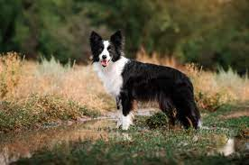

The Border Collie is a working and herding dog breed developed in the Anglo-Scottish border region for herding livestock, especially sheep. It was specifically bred for intelligence and obedience. Ranked number one in Stanley Coren's The Intelligence of Dogs and typically extremely energetic, acrobatic, smart and athletic, they frequently compete with great success in dog sports, in addition to their success in sheepdog trials and are often cited as the most intelligent of all dogs. Border Collies also remain employed throughout the world in their traditional work of herding livestock.
Border collie`s are awesome!
Border collies are hearding dogs that are known for their inteligence and obedience.

Border collie facts
Border collie. What are they?
Stay with us!
Sign up to our newsletter about border collies to stay up to date about informations about our dogs.